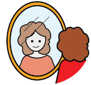

Blog
-

Intro to Yourself (self-analysis)
By Admin on June 28, 2020Today you are going to spend time with yourself and learn your strong and weak sides. Self-reflection is a good method to get to know yourself. So, let’s take a paper and try to answer these questions: Am I living true to myself? Am I using my time wisely? Am I taking care of myself physically?
Read More -
12 hours without internet
By Admin on November 28, 2023Internet detox might be a good idea. If you think it’s boring, call your friends and challenge them too or spend time trying to do new things. P.s. Sleeping is cheating, so it doesn’t count :)
Read More